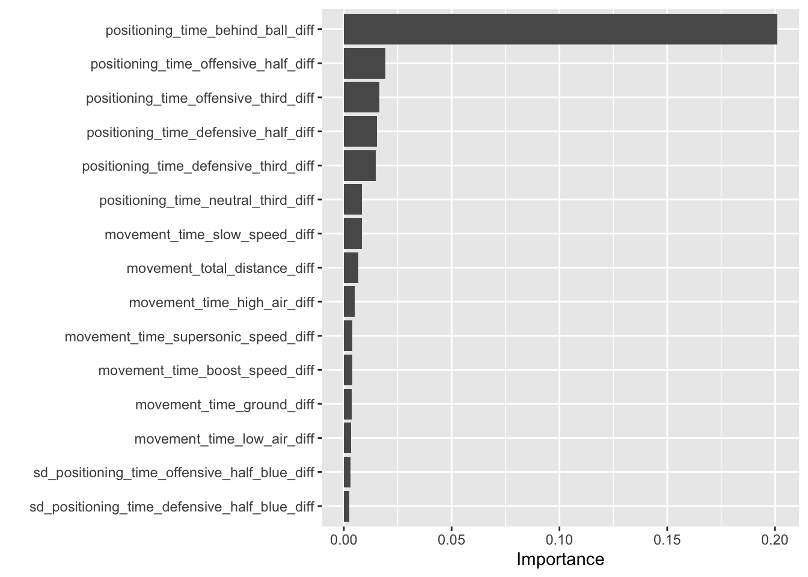

Loading required package: lattice
Attaching package: 'caret'
The following objects are masked from 'package:yardstick':
precision, recall, sensitivity, specificity
The following object is masked from 'package:purrr':
lift
library(ranger)library(vip)
Attaching package: 'vip'
The following object is masked from 'package:utils':
vi
Read in dataset:
library(here)
here() starts at /Users/tannerbessette/Desktop/SLU_Fellows
set.seed(3)RL_splits <-group_initial_split(RL_numeric, group = series_id, prop =0.8)RL_train <-training(RL_splits)RL_test <-testing(RL_splits)
Build Random Forest Model with all Variables Included:
# Preprocess the data for modellingRL_recipe <-recipe(winner_factor ~ ., data = RL_train) %>%step_rm(series_id) %>%step_normalize(all_numeric_predictors()) # Build a random forest model specificationrf_spec <-rand_forest() %>%set_engine("ranger", importance ="impurity") %>%set_mode("classification")# Bundle recipe and model spec into a workflowrf_wf <-workflow() %>%add_recipe(RL_recipe) %>%add_model(rf_spec)# Fit a modelrf_wf_fit <- rf_wf %>%fit(data = RL_train)# Make predictions on test dataresults <- RL_test %>%select(winner_factor) %>%bind_cols(rf_wf_fit %>%predict(new_data = RL_test)) %>%bind_cols(rf_wf_fit %>%predict(new_data = RL_test, type ="prob"))# Print out predictionsresults %>%slice_head(n =10)
set.seed(3)RL_sd_splits <-group_initial_split(RL_numeric_sd, group = series_id, prop =0.8)RL_sd_train <-training(RL_sd_splits)RL_sd_test <-testing(RL_sd_splits)
Build Random Forest model:
# Preprocess the data for modellingRL_sd_recipe <-recipe(winner_factor ~ ., data = RL_sd_train) %>%step_rm(series_id) %>%step_normalize(all_numeric_predictors()) # Build a random forest model specificationrf_sd_spec <-rand_forest() %>%set_engine("ranger", importance ="impurity") %>%set_mode("classification")# Bundle recipe and model spec into a workflowrf_sd_wf <-workflow() %>%add_recipe(RL_sd_recipe) %>%add_model(rf_sd_spec)# Fit a modelrf_sd_wf_fit <- rf_sd_wf %>%fit(data = RL_sd_train)# Make predictions on test dataresults_sd <- RL_sd_test %>%select(winner_factor) %>%bind_cols(rf_sd_wf_fit %>%predict(new_data = RL_sd_test)) %>%bind_cols(rf_sd_wf_fit %>%predict(new_data = RL_sd_test, type ="prob"))# Print out predictionsresults_sd %>%slice_head(n =10)
set.seed(3)RL_diff_splits <-group_initial_split(RL_numeric_diff_only, group = series_id, prop =0.8)RL_diff_train <-training(RL_diff_splits)RL_diff_test <-testing(RL_diff_splits)
Build Random Forest model:
# Preprocess the data for modellingRL_diff_recipe <-recipe(winner_factor ~ ., data = RL_diff_train) %>%step_rm(series_id) %>%step_normalize(all_numeric_predictors()) # Build a random forest model specificationrf_diff_spec <-rand_forest() %>%set_engine("ranger", importance ="impurity") %>%set_mode("classification")# Bundle recipe and model spec into a workflowrf_diff_wf <-workflow() %>%add_recipe(RL_diff_recipe) %>%add_model(rf_diff_spec)# Fit a modelrf_diff_wf_fit <- rf_diff_wf %>%fit(data = RL_diff_train)# Make predictions on test dataresults_diff <- RL_diff_test %>%select(winner_factor) %>%bind_cols(rf_diff_wf_fit %>%predict(new_data = RL_diff_test)) %>%bind_cols(rf_diff_wf_fit %>%predict(new_data = RL_diff_test, type ="prob"))# Print out predictionsresults_diff %>%slice_head(n =10)
set.seed(3)RL_movement_splits <-group_initial_split(RL_movement, group = series_id, prop =0.8)RL_movement_train <-training(RL_movement_splits)RL_movement_test <-testing(RL_movement_splits)
Build Random Forest Model with only movement variables included:
# Preprocess the data for modellingRL_movement_recipe <-recipe(winner_factor ~ ., data = RL_movement_train) %>%step_rm(series_id) %>%step_normalize(all_numeric_predictors()) # Build a random forest model specificationrf_movement_spec <-rand_forest() %>%set_engine("ranger", importance ="permutation") %>%set_mode("classification")# Bundle recipe and model spec into a workflowrf_movement_wf <-workflow() %>%add_recipe(RL_movement_recipe) %>%add_model(rf_movement_spec)# Fit a modelrf_movement_wf_fit <- rf_movement_wf %>%fit(data = RL_movement_train)# Make predictions on test datamovement_results <- RL_movement_test %>%select(winner_factor) %>%bind_cols(rf_movement_wf_fit %>%predict(new_data = RL_movement_test)) %>%bind_cols(rf_movement_wf_fit %>%predict(new_data = RL_movement_test, type ="prob"))# Print out predictionsmovement_results %>%slice_head(n =10)
# get results in a confusion matrix:movement_results %>%conf_mat(winner_factor, .pred_class)
Truth
Prediction 1 0
1 1807 322
0 274 1096
Calculate model accuracy:
(1807+1096)/(1807+1096+322+274)
[1] 0.8296656
The model classified with 82.967% accuracy
See most important variables in this model:
rf_movement_wf_fit %>%extract_fit_parsnip() %>%# Make VIP plot# num features changes number of variables being chosen, default is 10vip(num_features =15)

Clean visual plot of an example decision tree: (now just has positioning time behind ball as only predictor variable)
library(rpart)
Attaching package: 'rpart'
The following object is masked from 'package:dials':
prune
library(rpart.plot)clean_tree <-rpart(winner_factor ~ . - series_id, data = RL_train)clean_tree